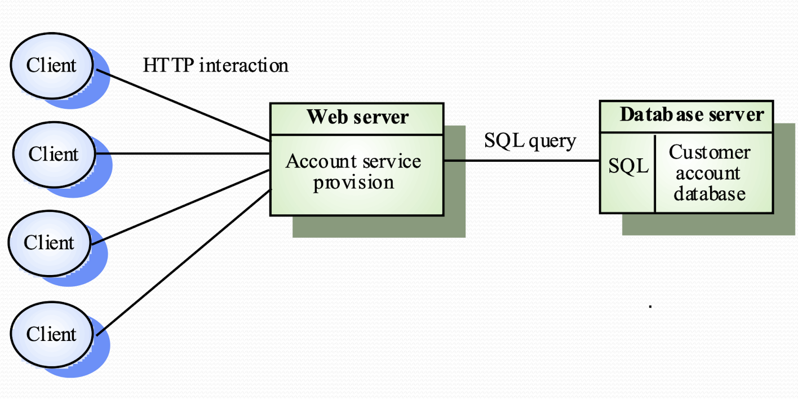
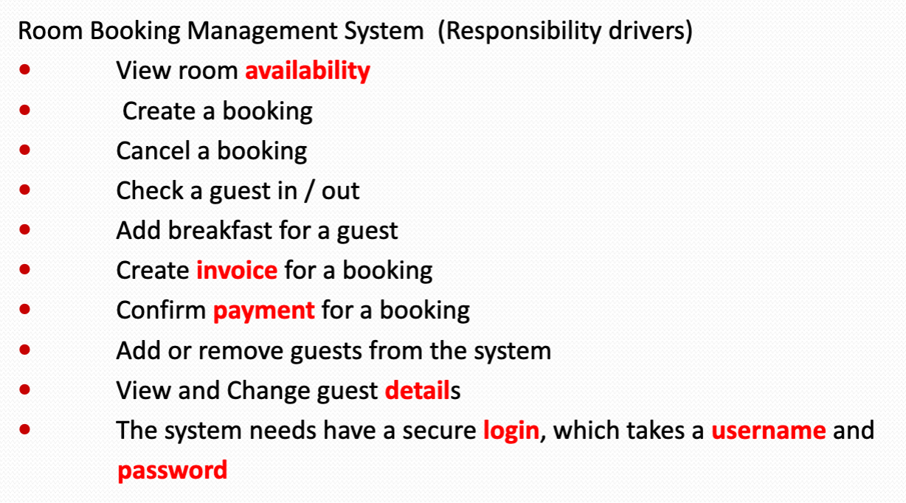
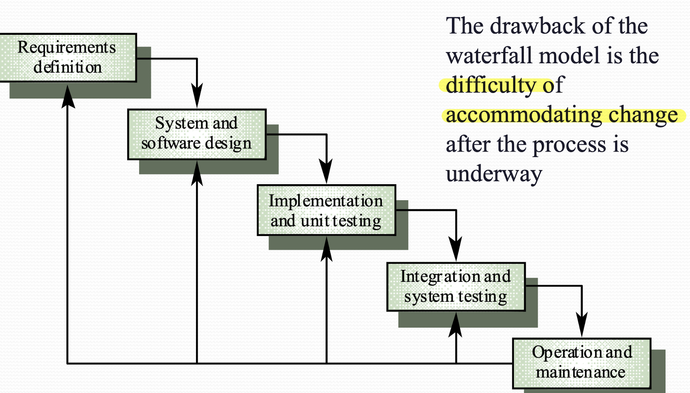
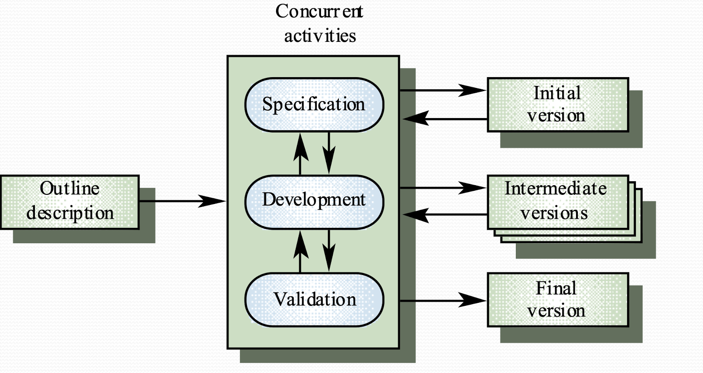

Lecture Note
Lecture 14 Design Methodology
Software Deign
- the design process is to derive a software solution that satisfy requirements.
What is a good system
- Useful and usable
- Reliable (low coupling)
- Flexible (low coupled, high cohesion)
- Affordable (Reusability)
- Available (dev cost optimized by reusing)
Module Interface
- abstraction
- encapsulation: others cannot know the internal info unless interface allows
- change of internal state of a module doesn't affect other part of the system
Principles for good design
- Linguistic Modular Unit
- i.e. Java classes. BASIC language is not Linguistic
- Few interfaces
- Module communicate with as few others as possible. i.e. facade structure
- Small interfaces
- The interface should concise, aka Loose coupling. Messaging between modules should be minimum
- The receiver does not change data of sender. i.e. using immutable data (string, ~~array,ptr,etc~~)
- Explicit interfaces
- The interface and document should be clear. i.e. Who is communicating with who
- Information hiding
- Make everything private
Coupling
- loose coupling means changes in a components not affect other components
- bad practice is 'shared variables/control event'
- good practice is 'decentralization / store states inside objects instead of shared repo'
- OOP is loosely coupled. Because no shared state and communication achieved by message passing. However, each object always coupled with its super-class
Cohesion
- each components only handle one problem logically
- Inheriting attributes from super-class weakens cohesion
- various levels:
- coincidental Cohesion
- logical association
- temporal Cohesion
- communication Cohesion
- sequential Cohesion
- functional Cohesion
- object cohesion
- cohesion & encapsulation:
- cohesion: how good the functionality of module is organized logically
- encapsulation: how good the data and methods are protected
Reusability
- Reusability ensures low cost of software
Stepwise Refinement
- Top-down split problems
- Recursively refine
- Until problem can be solved in 7-lines for example
Good Practice: High Cohesion, Loose Coupling with good interface
- If so, the module is easy to reuse or even pluggable
Lecture 15 Distributed System Architectures
Software Architectures
- Architectural Design:
- The early stage of design process, generate description of architecture
- Focuses on sub-systems (System components) and their communication & control
- In parallel with other specification design
Architectural Design process
- System structuring: decompose systems into components and identify the communication
- Control modelling: determine the model of control relationship between components
- Modular decomposition: decompose sub-systems into modules
Sub-systems and Modules
- Sub-system: operation independently, separately. i.e. JAVA packages, login system
- Modules: in a sub-system, but work together.
Benefit of subsystem modelling
- Re-assemble subsystem to build new system
Architectural Models
- Different models may be produce during the design process
- Different perspective gives different Architectures
- Static structural: merely show the components
- Dynamic process: who is calling how
- Interface model: define sub-system Interface
- relationship model: data-flow model
System structuring
- decompose the system into interacting components (sub-systems)
- use Block Diagram
Repository Models: data exchange between subsystem
- central database: suitable for large data
- internal database: each components pass data to each other
Client-Server Architecture
- components
- servers
- clients: call on services
- networks
- Feature
- distribution of data
- effective use of networks
- easy to extend new servers or upgrade
- No shared data, data interchange inefficient
- Redundant management in servers
- Hard to parse server and services
Control model
- centralized control
- one of subsystems control others
- call-return model
- top-down subroutines, using in sequential system
- NB, in a sequential model, events are also handled parallel in background in higher level
- manager model
- concurrent system, control subsystems in parallel
- real-time system control
- event-based control: server's handler listening for events then response accordingly
- broadcast model
- integrating different subsystem to response and working together
- control message is not embedded in event
- system not know when event happens
- NB, most of time is idle
- i.e broadcast -> {LED1, LED2, LED3, LED4}
- interrupt-driven model
- NB, most of time is busy
- used in real time system, fast response
- there is a handler in each interrupt types. i.e. INTERRUPT A -> LED1, INTERRUPT B -> LED2
Modular decomposition
- object model
- loosely coupled objects and well-define interfaces
- include: classes, attribute, operations
- data-flow model
- defines the batch sequential pipeline, used in data processing system
- not suitable for interactive system
Lecture 16 Distributed System Architecture
System Types
- Personal System
- Embedded System
- Distributed System
Distributed System Characteristics
- Resource Sharing
- Openness
- Concurrency
- Scalability
- Faulty Tolerance
- Transparency
- disadvantages: complex, security, manageability, unpredictability
Middleware
- manage and supports different components of a distributed system
- usually off-the-shelf
Distributed System Architectures
- Client-server: Services are called by clients, and server response to the request (sockets)
- Distributed object architecture: each object can provide to others and use services from others (remote methods)
Architectural Models
- Multi-processor
- Simplest distributed system model
- System run task as processes at same time on different processor
- NB, if there is one physical processor, the OS will slicing the runtime and dispatch to different processes.
- Client-server
- Applications is modelled as a set of services
- Client knows of servers and server doesn't know of clients
- Client and server are logical problem. i.e. run a program listing to request repeatedly
- processor on server can handle multiple processes.
- a physical clients terminal can have multiple clients. (sending request by ports)
- Distributed object architecture
- Each distributed entity is an object that provides and receives services to and from others
- communication is done by Middleware
- complex to design
- pros:
- Service can be processed and computing on more than one node -- truly distributed
- Can add more computing resources is needed
- Flexible and Scalable
- Dynamically configuration as the objects can migrating across the networks
Layered Applications Architecture
- Presentation Layer
- Applications processing Layer
- data layer
Thin and Fat clients
- Thin: server handles the application layer and data later
- Fat: clients handle the application layer, server only send data
- Nowadays, it is combined. Backend running some security applications, and front end like mobile apps run the thick processing or simply thin UI
Three-Tier architecture
- Each layer runs on separate processor. i.e. on more than one server
- suitable for large scale applications with thousands of clients 
Lecture 17 OOP
Object Oriented
- object incorporate both data structure and behavior
- System functionality is expressed in terms of object services
Object
-
behavior + state + identity
- state
- state of an object is all the data that it encapsulated
- objects has a number of attributes
- some attributes are mutable (address, reference) at the immutable
- behavior
- an object can understand certain messages, the messages is normally fixed like the set of attribute it has
- identity -objects are not defined just by the current value of their attributes
- the state of an object may change but is still the same object logically
-
Firstly, don't think water and object will have, instead think what will it do for the system
- objects are potentially reusable components
- An object is the thing you can interact with, i.e. You can send your request and get reaction.
- NB: How object behave may change as the current internal state of the object varies
- pros: no centralized data, only communicate by messaging. Independent encapsulated easy for maintenance
message
- a message includes a selector, i.e. the method that returns the message.
- A message may have arguments
interface
- the public interface of a object defines which messages will be accepted
- an object can also send message to self, this is managed by public or private interface
- public interface: any part of the system can use
- private interface: object itself or other privileged components of the system
- An object can have several interfaces that from different view of point
Class
- each object is an instance of a class
- class defines the message understandable as well as how object will response
- each instance has his own state, but share a same
staticstate of the class - A class encapsulates data and behavior, hiding the Implementation details
Inheritance
- inheritance is the sharing of attributes and operations in the hierarchy relationship
- subclass(superclass)
- Object class is always coupled to its superclass
Polymorphism
Doctor dc1 = new Surgeon("Mingjie");
Doctor dc2 = new GeneralPracticer("mingjie");
public void callDoctor(Doctor dc) {
// You can pass dc1 or dc2 in this function
}
Dynamic Binding
The print method is bind dynamically to the subclass in the main method
public class Printer {
public void print() {
System.out.println("Printer");
}
}
public class LaserPrinter extends Printer{
public void print() {
System.out.println("LaserPrinter");
}
}
public static void main(String[] args) {
Printer p = new LaserPrinter();
p.print(); // ==> "LaserPrinter"
}
UML
- UML is a language for specifying, visualizing and documenting
Lecture 18 Hotel Booking System - case study
Object-Oriented design and analysis
- We should design the following things
- classes
- database
- attributes in of the class and database
- methods in the class
- In the design process, start think of candidate classes and then database tables
- Class persistence is achieved by database table
Use case
Use case of a hotel booking system may include 
Noun analysis
- Identifying nous in requirement helps to discover class names.
- Nouns in requirement may lead to classes name or attributes name or nothing.
- Attributes is inferred from document.
OO analysis
Complete the class diagram: - Includes attributes - Relationship to other classes - Add method according to responsibility
Class Diagram

Lecture 2 Software Process
Software Process
- Life cycle: the process involves the building of a product.
- For a software, its life cycle terminates when the provider stops support.
Software Process Model (Development Patter)
Waterfall Model
-
A stepwise refinement of requirement.
-
Suitable when the requirement is well-determined and understood.
-
Drawback:
- inflexible partitioning of project
- difficult to update

Evolutionary Development
- Starting with a well-understood requirement
- Develop software form a initial implementation, then refine (add new features) it based on user's response.
-
Evolutionary development involves Exploratory development
-
Drawbacks:
- Lack of process visibility
- Sometimes poorly structured
- Not suitable in safety critical projects

Agile and Scrum
- Lightweight approach to software development
- Scrum: Incremental Development
- Development and delivery is broken down into increments (sprints) that gives part of the functionality
- High priority requirement are included in early increments